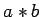

Inhalt Index DeskTop Bronstein

 Algebra und Diskrete Mathematik Klassische algebraische Strukturen Operationen
Algebra und Diskrete Mathematik Klassische algebraische Strukturen Operationen


Besonders wichtig ist der Fall n=2, wobei man von binären Operationen spricht, z.B. Addition und Multiplikation von Zahlen bzw. Matrizen oder Vereinigung und Durchschnitt von Mengen. Eine binäre Operation ist also eine Abbildung , wobei man anstelle von ,,`` in der Regel die Infixschreibweise ,,`` benutzt. Eine binäre Operation  in A heißt assoziativ, falls
in A heißt assoziativ, falls
und kommutativ, falls
| (5.93) |
jeweils für alle gilt.
Ein Element heißt neutrales Element bezüglich einer binären Operation  in A, falls
in A, falls
| (5.94) |
gilt.